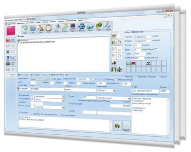

Profil hôtelier | Désireux de développer des applications à destination des hôtels
Candidat intéressé par les formations :
DEVELOPPEUR EN INTELLIGENCE ARTIFICIELLE
DEVELOPPEUR WEB/WEB MOBILE
Amusant, ce classement des 5 meilleures actrices vous propose de découvrir leurs meilleurs films.
En cliquant sur leur photo, ou bien sur leur bouton, découuvrez ces informations.
Technique : superposition desimages en couleur et noir et blanc, utilisation de plusieurs polices.
Ce qui motive ma candidature...
|  |
Mes expériences les plus fortes en hôtellerie ont été celles où mon travail était structuré par des tableaux de bord et analytiques adaptés, ajustés régulièrement, au fonctionnement de mes activités. Ceci, à travers Excel et Access au début, puis par FileMaker, qui me correspondait parfaitement. |